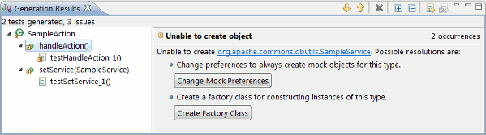

The Generation Results view displays the results of CodePro’s test generation. It allows the user to see the classes and methods under test, the generated JUnit tests, as well as any issues that the test generator encountered. The user has options to resolve various issues, and the ability to regenerate affected tests from inside the view.

The Generation Results view opens automatically when the CodePro test generator runs. To generate tests, right click on a Java source file and choose CodePro Tools > Generate Test Cases.
The view shows the classes and methods under test in the left-hand pane. You can drill down to the generated JUnit tests by expanding a method node. Double clicking on a node will take you to the class under test, the method under test, or the generated test.
If there are issues generating tests, they show up as icon decorations in the tree. Select a decorated node to see the issue details in the right-hand pane.
There can sometimes be issues that affect many generated tests. You’ll see these issues in each affected location. The count in the upper right of the details view will show you how many instances of each specific issue there are. For these identical issues, resolving them in one location automatically resolves them in the other locations.
Some issues have suggested resolutions. For instance, the ‘Unable to create object’ issue gives you two possible automatic resolutions. When you choose to perform a resolution, the issue changes to a resolved state. You then need to re-run the test generation to see your changes. You can do this from within the view itself; either choose the toolbar action Regenerate Changed Tests, or select the test or class from the tree and choose the toolbar action Regenerate Selected Tests.